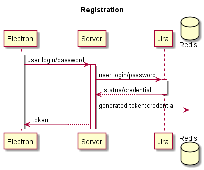

Formatting
Test
We’re going to cover all the standard formatting, like italics, bolds, :inline-code strikethrough and “smart quotes” – so we can check the styling in the docs.
- Let’s check
- unordered
- lists
- And let’s also check
- ordered
- lists
Let’s check to make sure that a
#hashtag at the beginning of a line is not a header
Header 1
Header 2
Header 3
Header 4
Header 5
Header 6
We should also check code block formatting:
(defn foo [x]
(+ x 1))
Even within fenced code blocks:
(defn foo-1 [x]
(+ x 1))
(defn foo-2 [x]
(+ x 1))
Inline links and reference links.
Extensions like auto-linked URLs (http://example.com) and tabular data:
| foo | bar |
|---|---|
| 1 | 2 |
| 3 | 4 |

Definition lists:
- foo
- a variable
- :bar
- a keyword definition
- baz
- a longer description that goes on for several lines, demonstrating that terms in a definition list can have definitions that span multiple lines.
We can also use wikilinks to reference existing vars, like ../../src/server_timetracker/core.clj or the Foop protocol, or to reference namespaces, like codox.example.
Any abbreviations, like HTML or HTTP, that have corresponding abbreviations, will be marked with <abbr> tags.